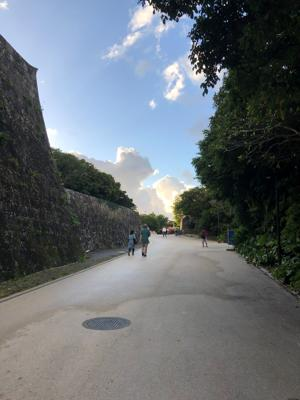
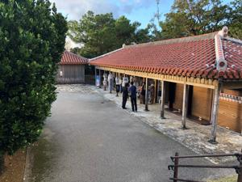
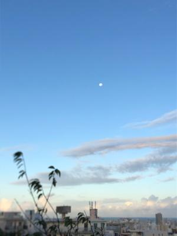

うるがいの話 ある日
最新: ウミンチュの息子うるがいとは 前提知識です
カニの画像をクリックすると『うるがいの話』サイトを表示します|
|
【うるがいの話】 うるがい(ｳﾙｶﾞｲ urugai)とは、『もずくがに』の名前でとても大きくなります。 |
|---|---|
|
|
【Got cat カミマヤーの話】 たながー（ﾀﾅｶﾞｰtanagaa）とは手長えびのことで、何種類かあり大きいのは車 エビぐらいになります。 |

|
【ぶながぁの話】 ぶながー(bunagaa)とは、赤い髪の毛、赤い身体、そして身長は１ｍ２０ｃｍ ぐらい、川の蟹を食べているの目撃された。場所は沖縄県国頭郡大宜味村のと ある村僕の隣近所に住んでいる爺さんから、聞いた話です。 |
|
|
【ギーマの話】 ギーマ(giima)とは、山原の里山に咲くスズランに似た、 花を付けます。実は食べられます、 気が付くと口の周りが紫になっています。 |
2021年11月22日 (月）ウミンチュの息子
15:30
  
中学生の時、ある夏の日友達と一緒に海で泳いでいたら、サバニが近づいてき
て船に乗っていた父親が、『やーや（お前は）・・・なんと怒られたかもう覚
えていない』と方言で叫びながらエーク（櫂）で、私の首を押さえつけ海の中
に沈み込ませた。それで怒りが収まったのか、そのまま一緒に船に乗っていた
シンカ（漁の仲間）と電灯ワザ（夜間に海中電灯で水中を照らし伊勢海老を採
ること）を行うため沖へ向かった。友達が、『ウミンチュの息子は大変だな！
』とひいていた。この前、図書館で三線の本を捜すとき『ウミンチュの娘』と
いう本があったので借りた。著者は３歳ほど年上だが、その本の体験談は驚く
ほど私と似ている。いつかどこかで会って話してみたいもんだ。昨日首里城へ
行くと人がチラホラ、店も開いて観光客を店員さんが相手していた。新規感染
者がゼロの日が度々ある、第六波は何時来るのでだろう。昼は扇風機を回した
夜から冷え込むようだ。